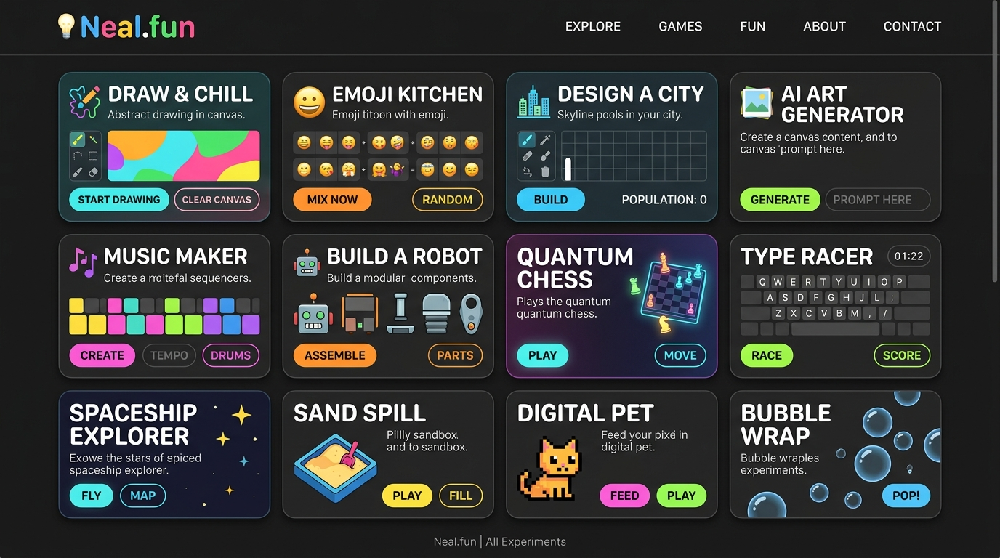

Neal.fun
Playful interactive experiments that make learning feel like playing.
Description
Neal.fun is a collection of interactive web experiments created by Neal Agarwal. Each project transforms complex topics — from the size of the universe to the history of money — into intuitive, visually rich experiences you can explore in your browser. No downloads, no sign-ups. Just click and discover.
Why It's Interesting
In a web dominated by static content and engagement loops, Neal.fun proves that the internet can still be a place of wonder. Each experiment is a self-contained journey — beautifully designed, thoughtfully researched, and deeply satisfying to explore. It represents the best of what independent web creation can be.
Best For
- Curious minds who love learning through interaction
- Designers looking for creative web inspiration
- Anyone tired of doomscrolling and looking for meaningful internet experiences
- Teachers seeking engaging educational tools
Notable Features
- The Size of Space — scroll through the entire universe, from atoms to galaxy superclusters
- Spend Bill Gates' Money — an interactive budget simulator with real prices
- The Deep Sea — dive to the bottom of the ocean, discovering creatures at every depth
- Draw Logos From Memory — test how well you remember famous brand logos